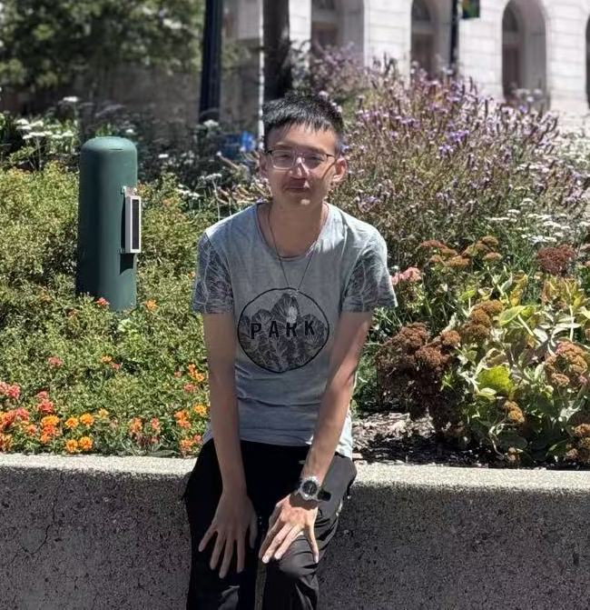

Dao Zhou
Hi, welcome to my webpage!
I am Dao Zhou (you can also call me Douglas), a senior undergraduate majoring in Psychology at Zhejiang University, China (QS global ranking: 47th). I am expected to graduate in June 2027 and am actively seeking Ph.D. opportunities in Psychology, Linguistics or Neuroscience for Fall 2027.
During my undergrad, I collaborate closely with Prof. Xiang-Zhen Kong at the Cognomics Lab, where I lead an fMRI project investigating the heterogeneity of sentence comprehension and how the brain integrates diverse cognitive dimensions during reading. Additionally, I serve as a part-time Research Assistant at the Play and Learning Lab (PI: Prof. Danyang Han), gaining hands-on experience in infant behavioral experiments.
Currently, I am a Visiting Student Intern at the Neurolinguistics Lab (NeLLab) at New York University, working with Prof. Liina Pylkkänen to study the capacity limitations of human language processing using MEG.
Feel free to explore my Research tab for topics I'm interested in and Projects tab for project experience I've had, or download my CV.
